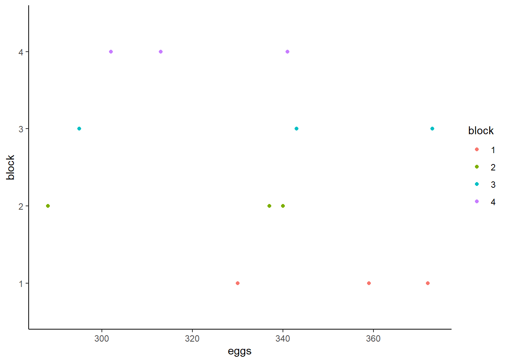

Mixed-Effect Models
Multilevel model: two levels
The eggprod data in the faraway package contains data on
egg production. (Faraway 2016) Six pullets
(young hens) were placed into each of 12 pens. Four blocks were formed
from groups of 3 pens based on location. Three treatments were applied.
The number of eggs produced was recorded. Start by visualizing the
distribution of eggs produced split by blocks and treatment.
library(faraway)
data("eggprod")
library(ggplot2)
# Plotting eggs ~ treat
ggplot(eggprod, aes(x=treat, y=eggs, color = treat)) + # Plotting eggs~treat, color by treat
geom_jitter(position=position_jitter(0.2)) + # Creating a jitter plot, staggering groups
coord_flip() + # Flipping x and y coordinates to mimic Base R plotting
theme_classic() # Using classic theme
# Plotting eggs ~ block
ggplot(eggprod, aes(x=block, y=eggs, color = block)) + # Plotting eggs~treat, color by treat
geom_jitter(position=position_jitter(0.2)) + # Creating a jitter plot, staggering groups
coord_flip() + # Flipping x and y coordinates to mimic Base R plotting
theme_classic() # Using classic theme
This shows visually that treatment O may have produced fewer eggs than treatment F or E whose distributions are more similar and closer to one another. The distributions of eggs produced by each block seem to overlap and are very similar to one another.
Now, we model the number of eggs produced with treat as
a fixed effect and block as a random effect. (Faraway 2006) Does treat appear to
affect the number of eggs, and if so, which treatment seems
superior?
library(lme4)
m <- lmer(eggs ~ treat + (1|block), data = eggprod)
summary(m)## Linear mixed model fit by REML ['lmerMod']
## Formula: eggs ~ treat + (1 | block)
## Data: eggprod
##
## REML criterion at convergence: 85.4
##
## Scaled residuals:
## Min 1Q Median 3Q Max
## -1.71233 -0.47453 -0.02845 0.64196 1.42942
##
## Random effects:
## Groups Name Variance Std.Dev.
## block (Intercept) 129.9 11.40
## Residual 386.9 19.67
## Number of obs: 12, groups: block, 4
##
## Fixed effects:
## Estimate Std. Error t value
## (Intercept) 349.00 11.37 30.702
## treatF -6.25 13.91 -0.449
## treatO -42.50 13.91 -3.056
##
## Correlation of Fixed Effects:
## (Intr) treatF
## treatF -0.612
## treatO -0.612 0.500library(performance)
icc(m)## # Intraclass Correlation Coefficient
##
## Adjusted ICC: 0.251
## Unadjusted ICC: 0.144VarCorr(m)## Groups Name Std.Dev.
## block (Intercept) 11.399
## Residual 19.670The likeness of egg production in the same block is .25. The variation around the intercept is 11.40 across blocks. The intercept fixed effect is the grand mean of eggs across the entire sample when treat = “E”. The treatF and treatO fixed effects can be interpreted as the difference in means (e.g., treatE - treatF). Therefore, treatF produces 6.25 less mean egg production and treatO produces 42.50 less mean egg production.
This is further substantiated by looking at the means by treatment. Observed means of eggs by treat:
tapply(eggprod$eggs, eggprod$treat, mean)## E F O
## 349.00 342.75 306.50Pairwise comparisons, adjusted p-values and confidence intervals:
library(emmeans)
emmeans(m, pairwise ~ treat)## $emmeans
## treat emmean SE df lower.CL upper.CL
## E 349 11.4 7.99 323 375
## F 343 11.4 7.99 317 369
## O 306 11.4 7.99 280 333
##
## Degrees-of-freedom method: kenward-roger
## Confidence level used: 0.95
##
## $contrasts
## contrast estimate SE df t.ratio p.value
## E - F 6.25 13.9 6 0.449 0.8965
## E - O 42.50 13.9 6 3.056 0.0508
## F - O 36.25 13.9 6 2.606 0.0892
##
## Degrees-of-freedom method: kenward-roger
## P value adjustment: tukey method for comparing a family of 3 estimatesemmeans(m, pairwise ~ treat) |> confint()## $emmeans
## treat emmean SE df lower.CL upper.CL
## E 349 11.4 7.99 323 375
## F 343 11.4 7.99 317 369
## O 306 11.4 7.99 280 333
##
## Degrees-of-freedom method: kenward-roger
## Confidence level used: 0.95
##
## $contrasts
## contrast estimate SE df lower.CL upper.CL
## E - F 6.25 13.9 6 -36.426 48.9
## E - O 42.50 13.9 6 -0.176 85.2
## F - O 36.25 13.9 6 -6.426 78.9
##
## Degrees-of-freedom method: kenward-roger
## Confidence level used: 0.95
## Conf-level adjustment: tukey method for comparing a family of 3 estimatesAn effect plot:
library(ggeffects)
ggpredict(m, terms = ~ treat) |> plot(add.data = TRUE)
We can now assess model fit and significance of predictors.
car::Anova(m)## Analysis of Deviance Table (Type II Wald chisquare tests)
##
## Response: eggs
## Chisq Df Pr(>Chisq)
## treat 10.887 2 0.004324 **
## ---
## Signif. codes: 0 '***' 0.001 '**' 0.01 '*' 0.05 '.' 0.1 ' ' 1library(lmerTest)
summary(m)## Linear mixed model fit by REML ['lmerMod']
## Formula: eggs ~ treat + (1 | block)
## Data: eggprod
##
## REML criterion at convergence: 85.4
##
## Scaled residuals:
## Min 1Q Median 3Q Max
## -1.71233 -0.47453 -0.02845 0.64196 1.42942
##
## Random effects:
## Groups Name Variance Std.Dev.
## block (Intercept) 129.9 11.40
## Residual 386.9 19.67
## Number of obs: 12, groups: block, 4
##
## Fixed effects:
## Estimate Std. Error t value
## (Intercept) 349.00 11.37 30.702
## treatF -6.25 13.91 -0.449
## treatO -42.50 13.91 -3.056
##
## Correlation of Fixed Effects:
## (Intr) treatF
## treatF -0.612
## treatO -0.612 0.500Running a \(\chi^2\) test on the
model, we see that the model including treat is a better fit (\(\chi^2(2,N = 12) = 10.887, p < .01\))
than the null model (intercept only). By loading the
lmerTest package, we can see in the summary that
specifically, treatment O is significant less than treatment E.
# normality of residuals; looks good
lattice::qqmath(m)
# constant variance; one pretty big residual (model predicts about 335 but the observed value is closer to 300)
plot(m)
# constant variance within treatment levels; TreatF has a lot more variability
plot(m, treat ~ resid(.))
Repeated-Measures model
The book Linear Mixed Models presents a study on rat brains (West, Welch, and Galecki 2015). In this study, five rats had three regions of their brains measured for “activation” after two different treatments. Since all rats received both treatments and had the same three regions measured both times, this is a repeated-measures analysis. Of interest is how the numeric dependent variable, activate, changes based on treatment and brain region.
The data is available in the file “rat_brain.dat”. We can import this
file using the read.table() function. We set
header = TRUE because the first row of the data contains
column headers.
rats <- read.table("data/rat_brain.dat", header = TRUE)The animal column contains the id for each rat. Below we use the
head() function to view the first six rows of data. Notice
the first rat, R111097, has one measure for each combination of
treatment and region. This is why we refer to this as repeated-measures
data.
head(rats)## animal treatment region activate
## 1 R111097 1 1 366.19
## 2 R111097 1 2 199.31
## 3 R111097 1 3 187.11
## 4 R111097 2 1 371.71
## 5 R111097 2 2 302.02
## 6 R111097 2 3 449.70Longitudinal model
The text Statistical Methods for the Analysis of Repeated Measurements (Davis 2002) presents data on plasma inorganic phosphate measurements for 33 subjects (13 controls, 20 obese) after an oral glucose challenge. Measurements were taken at baseline (t0), 0.5, 1, 1.5, 2, and 3 hours. Of interest is how the plasma inorganic phosphate levels differ over time and between the two groups. Fit a sensible linear mixed-effect model to investigate these questions.
Below we read in the data, provide columns names, and format the group column as a factor. Notice the data is in “wide” format, with one record per subject.
phosphate <- read.table("data/phosphate.dat", header = FALSE)
names(phosphate) <- c("group", "id", "t0", "t0.5", "t1", "t1.5", "t2", "t3")
phosphate$group <- factor(phosphate$group, labels = c("control", "obese"))
head(phosphate)## group id t0 t0.5 t1 t1.5 t2 t3
## 1 control 1 4.3 3.3 3.0 2.6 2.2 2.5
## 2 control 2 3.7 2.6 2.6 1.9 2.9 3.2
## 3 control 3 4.0 4.1 3.1 2.3 2.9 3.1
## 4 control 4 3.6 3.0 2.2 2.8 2.9 3.9
## 5 control 5 4.1 3.8 2.1 3.0 3.6 3.4
## 6 control 6 3.8 2.2 2.0 2.6 3.8 3.6Reshaping the data facilitates data visualization. The
pivot_longer() function from the tidyr package makes quick
work of this. (Wickham and Girlich
2022)
- The
names_to = "time"argument moves the column names, t0 - t3, into a single column called “time” - The
names_prefix = "t"argument strips “t” from the column names that were placed in the “time” column. - The
names_transform = list(time = as.numeric)converts values in the new “time” column to numeric. - The
values_to = "level"moves the values under the t0 - t3 columns into a single column called “level”
library(tidyr)
phosphateL <- pivot_longer(phosphate, cols = t0:t3,
names_to = "time",
names_prefix = "t",
names_transform = list(time = as.numeric),
values_to = "level")
head(phosphateL, n = 10)## # A tibble: 10 × 4
## group id time level
## <fct> <int> <dbl> <dbl>
## 1 control 1 0 4.3
## 2 control 1 0.5 3.3
## 3 control 1 1 3
## 4 control 1 1.5 2.6
## 5 control 1 2 2.2
## 6 control 1 3 2.5
## 7 control 2 0 3.7
## 8 control 2 0.5 2.6
## 9 control 2 1 2.6
## 10 control 2 1.5 1.9Now we can use the ggplot2 package (Wickham 2016) to visualize the data. Below we plot the phosphate trajectories over time for each subject, with the plots broken out by group. In addition we add a smooth trend line to each plot to visualize the “average” trend for each group. There appears to be a great deal of variability between the subjects within each group. It also looks like the phosphate levels drop quickly within the first hour for the control group compared to the obese group.
library(ggplot2)
ggplot(phosphateL) +
aes(x = time, y = level, group = id) +
geom_line() +
geom_smooth(aes(group = group), se = FALSE, linewidth = 2) +
facet_wrap(~group)
We can also compute simple means by time and group and compare
visually. Below we use aggregate() to compute the means and
then pipe into the ggplot code. Again it appears the phosphate levels
for the control group drop faster and lower than the obese group, though
by hour 3 they seem about the same.
aggregate(level ~ time + group, data = phosphateL, mean) |>
ggplot() +
aes(x = time, y = level, linetype = group) +
geom_point() +
geom_line()In both plots it appears the effect of time differs between groups. Therefore it seems reasonable to allow these terms to interact in our mixed-effect model.
To fit our models we will use the lmer() function in the
lme4 package (Bates et al. 2015). Below we
model level as a function of time, group, and their interaction. We also
fit a random intercept for each subject using the syntax
(1|id:group). The reason we use id:group is
because the id numbers are nested within each group. This creates 33
separate id groups. The summary output shows a fairly large t value for
the interaction, which provides good evidence that the interaction is
reliably negative. (The summary output for lmer models does not display
p values since the null distributions for the t values are unknown for
unbalanced data.)
library(lme4)
m <- lmer(level ~ time * group + (1|id:group), data = phosphateL)
summary(m, corr = FALSE)## Linear mixed model fit by REML. t-tests use Satterthwaite's method [
## lmerModLmerTest]
## Formula: level ~ time * group + (1 | id:group)
## Data: phosphateL
##
## REML criterion at convergence: 389.6
##
## Scaled residuals:
## Min 1Q Median 3Q Max
## -2.34465 -0.60816 -0.08669 0.56476 2.25586
##
## Random effects:
## Groups Name Variance Std.Dev.
## id:group (Intercept) 0.2762 0.5255
## Residual 0.2934 0.5416
## Number of obs: 198, groups: id:group, 33
##
## Fixed effects:
## Estimate Std. Error df t value Pr(>|t|)
## (Intercept) 3.4201 0.1785 49.6845 19.154 < 2e-16 ***
## time -0.1776 0.0622 163.0000 -2.855 0.004863 **
## groupobese 0.8819 0.2294 49.6845 3.845 0.000344 ***
## time:groupobese -0.2364 0.0799 163.0000 -2.959 0.003546 **
## ---
## Signif. codes: 0 '***' 0.001 '**' 0.01 '*' 0.05 '.' 0.1 ' ' 1Before we use or interpret this model we should assess the residuals
vs fitted value plot. We can create this plot by simply calling
plot() on the model object. We would like to see a uniform
distribution of residuals hovering closely around 0. This plot looks OK
until our fitted values exceed 4.0, at which point we begin to
under-predict. Most of the residuals are positive in this range,
indicating our model-fitted values are systematically smaller than what
we observed.
plot(m)
The model we fit assumes the effect of time is linear, and that the linear effect of time changes for each group. We can visualize the model using the ggeffects package (Lüdecke 2018). With the data added we can see that linear effects seem to simplistic.
library(ggeffects)
ggeffect(m, terms = c("time", "group")) |>
plot(add.data = TRUE, jitter = 0)
Given our exploratory plots we may want to entertain a
non-linear effect of time. One way to do this is with natural
cubic splines. Using the splines package (R Core
Team 2022), we can specify that we want to allow the trajectory
of time to change directions twice using the syntax
ns(time, df = 2). We skip summarizing the model and look at
the residuals vs fitted value plot. This looks better than the previous
plot, though it still exhibits some under-predicting in the higher end
of the fitted values.
library(splines)
m2 <- lmer(level ~ ns(time, df = 2) * group + (1|group:id),
data = phosphateL)
plot(m2)
We can compare the models’ AIC values to assess whether the more complicated model is better. Recall that lower AIC values suggest a model will perform better on out-of-sample data. It appears the model with non-linear effects is a good deal better than the model with linear effects. The df column refers to the number of parameters in the model.
AIC(m, m2)## df AIC
## m 6 401.6025
## m2 8 321.0661The non-linear model is better than the original linear model. But is
the non-linear model a good model? One way to assess this is to
simulate data using the model and see how it compares to the original
data. Below we use the simulate() function to simulate 50
sets of phosphate values from our non-linear model. Next we plot a
smooth histogram of the observed data. Then we loop through the
simulated data and plot a smooth histogram for each simulation. What we
see is that our model is generating data that looks pretty similar to
our original data. It’s not perfect, and we wouldn’t want it to be, but
it looks good enough.
sim1 <- simulate(m2, nsim = 50)
plot(density(phosphateL$level), ylim = c(0, 0.6))
for(i in 1:50)lines(density(sim1[[i]]), col = "grey90")As before, let’s use ggeffects to visualize our model. We see the bend in our fitted lines due to our non-linear model.
ggeffect(m2, terms = c("time", "group")) |>
plot(add.data = TRUE, jitter = 0)Looking at the summary for model m2 reveals coefficients that are impossible to interpret. This is one of the drawbacks of models with non-linear effects. However we see under the Random effects section that there is more variation between subjects (0.54) than within subjects (0.42). This probably makes biological sense.
summary(m2, corr = FALSE)## Linear mixed model fit by REML. t-tests use Satterthwaite's method [
## lmerModLmerTest]
## Formula: level ~ ns(time, df = 2) * group + (1 | group:id)
## Data: phosphateL
##
## REML criterion at convergence: 305.1
##
## Scaled residuals:
## Min 1Q Median 3Q Max
## -2.3481 -0.5403 0.0777 0.5780 2.8434
##
## Random effects:
## Groups Name Variance Std.Dev.
## group:id (Intercept) 0.2953 0.5434
## Residual 0.1787 0.4227
## Number of obs: 198, groups: group:id, 33
##
## Fixed effects:
## Estimate Std. Error df t value Pr(>|t|)
## (Intercept) 3.97849 0.18217 53.50768 21.839 < 2e-16
## ns(time, df = 2)1 -2.20405 0.24410 161.00000 -9.029 5.08e-16
## ns(time, df = 2)2 0.21989 0.13821 161.00000 1.591 0.1136
## groupobese 0.59564 0.23401 53.50768 2.545 0.0138
## ns(time, df = 2)1:groupobese 0.03403 0.31355 161.00000 0.109 0.9137
## ns(time, df = 2)2:groupobese -0.90276 0.17753 161.00000 -5.085 1.01e-06
##
## (Intercept) ***
## ns(time, df = 2)1 ***
## ns(time, df = 2)2
## groupobese *
## ns(time, df = 2)1:groupobese
## ns(time, df = 2)2:groupobese ***
## ---
## Signif. codes: 0 '***' 0.001 '**' 0.01 '*' 0.05 '.' 0.1 ' ' 1Judging from the effect display the interaction in the model is
warranted, but we can formally test and verify this using the
Anova() function in the car package (Fox and Weisberg 2019). The large chi-square
statistic and small p-value confirm this.
library(car)
Anova(m2)## Analysis of Deviance Table (Type II Wald chisquare tests)
##
## Response: level
## Chisq Df Pr(>Chisq)
## ns(time, df = 2) 205.0647 2 < 2.2e-16 ***
## group 7.7832 1 0.005273 **
## ns(time, df = 2):group 26.8095 2 1.508e-06 ***
## ---
## Signif. codes: 0 '***' 0.001 '**' 0.01 '*' 0.05 '.' 0.1 ' ' 1Since we have both non-linear effects and interactions, there is no
convenient interpretation of our model parameters. However we can use
our model to make predictions at levels of interest and then compare the
expected values. For example, what is the expected difference in
phosphate values between control and obese subjects at 1 hour post
glucose challenge? We can answer this using the emmeams package (Lenth 2022). Below we specify we want to use m2
and compare groups at time = 1, and then pipe into the
confint() function for a 95% confidence interval on the
difference. (We can disregard the note about interactions since we
specified the time.) The output indicates an estimated difference of
about -0.83 with a 95% CI of [-1.26, -0.40].
library(emmeans)
emmeans(m2, specs = pairwise ~ group, at = list(time = 1)) |>
confint()## $emmeans
## group emmean SE df lower.CL upper.CL
## control 2.88 0.164 36 2.55 3.21
## obese 3.71 0.132 36 3.44 3.98
##
## Degrees-of-freedom method: kenward-roger
## Confidence level used: 0.95
##
## $contrasts
## contrast estimate SE df lower.CL upper.CL
## control - obese -0.832 0.211 36 -1.26 -0.404
##
## Degrees-of-freedom method: kenward-roger
## Confidence level used: 0.95